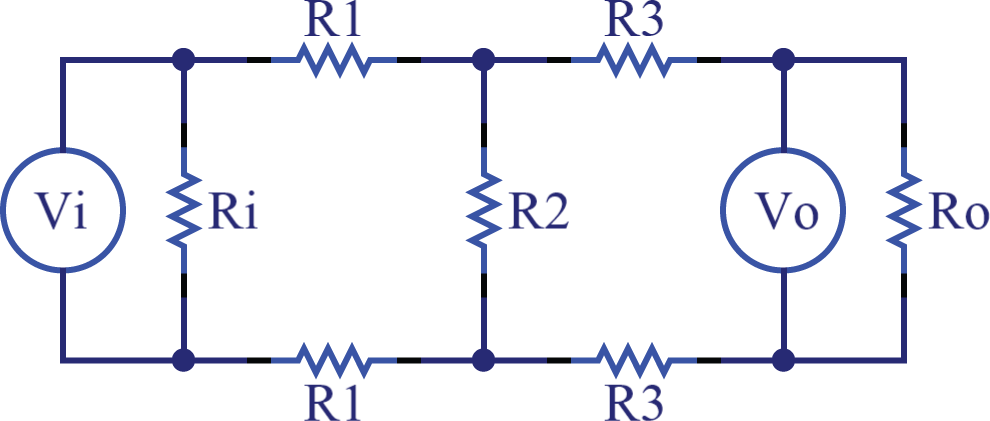

H-Pad divider

\(R_i = \)
\( \equiv {{(R_o + 2R_3) R_2\over R_o+2R_3 + R_2} + 2R_1} \equiv \text{input impedance} \)
\(R_o = \)
\( \equiv {{(R_i + 2R_1) R_2\over R_i+2R_1 + R_2} + 2R_3} \equiv \text{output impedance} \)
\({V_o \over V_i} = \)
\( = {1} - {2R_1 \over 2R_1 + R_2} \)
Calculate